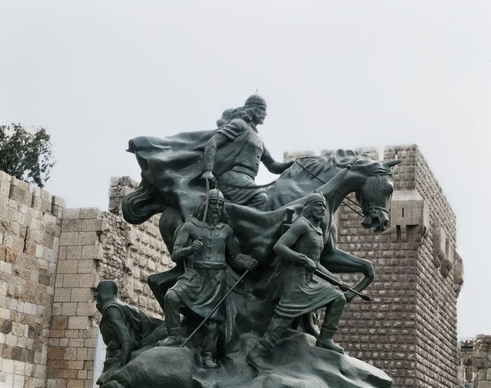

THE CHIVALRIC SIEGE
He retook Jerusalem and then paid his enemy's ransom himself — the only conqueror in history whose mercy was not weakness but law, and he came back to teach the law to a world that forgot it.

THE CHIVALRIC SIEGE
He retook Jerusalem and then paid his enemy's ransom himself — the only conqueror in history whose mercy was not weakness but law, and he came back to teach the law to a world that forgot it.
Feature map
Level-by-level features, as the figure refined them.
The Code Spoken
Bonus action · 1 CE.
Tier III · Tank · suggested CE ability CON · Primary verb: Shield. Courtesy made battlefield law. The Code is declared, and Heaven enforces it: strike the shielded, and the field punishes you; break the Law, and the Law breaks you.
Choose up to PB willing creatures within 30 ft — they are Shielded until the start of your next turn (willing creatures may decline). While Shielded, when an enemy within 30 ft of you attacks a Shielded creature, you may use your reaction to interpose: the attack targets you instead, and you gain resistance to that attack's damage. (The law is spoken. The shield is raised.)
Fearless
Passive.
You have advantage on saving throws against being frightened, and Shielded creatures within 10 ft of you share this advantage. (He sent horses to Richard. Fear never governed him.)
The Siege Laws
Action · 3 CE · 1 minute (concentration) · 30-ft radius centered on you.
Declare one Law of the siege, disclosed to all within. Choose one: - Law of Quarter. When an enemy within the radius reduces a creature to 0 hit points, the enemy takes 3d8 force damage. (No striking the fallen.) - Law of Sanctuary. Allies within the radius gain half cover (+2 AC and +2 to DEX saves). (The camp is sacred.) - Law of Challenge. Name one enemy you can see. It has disadvantage on attack rolls against creatures other than you. (Face me, if you dare.) Heaven enforces the declared Law. You may change the Law by spending another action (no additional CE).
Richard's Horses
Bonus action · 2 CE · touch.
Restore 2d8 + your CON modifier hit points to a creature you touch — even an enemy. (So that the battle can continue properly.)
The Walls of Jerusalem
Reaction · 4 CE · once per round.
When an ally within 30 ft of you takes damage, grant them resistance to that damage. (The walls held. They always held.)
Retribution of the Code
Passive.
Once per turn, when an enemy within 30 ft of you hits a Shielded creature with an attack, that enemy takes force damage equal to your PB + your CON modifier. (The field punishes the breach.)
One Enemy, One Honor
Passive.
When you use your reaction to interpose (The Code Spoken), you may also make one melee weapon attack against the attacker as part of the same reaction. (He respects the worthy foe — and answers them.)
The Chivalric Siege, Perfected
Passive.
Your Siege Laws radius becomes 60 ft, you may maintain two Laws at once, your interpose range becomes 60 ft, and Shielded creatures gain resistance to the first attack that hits them each round. (The law is no longer declared. It is assumed — the way air is assumed.)
Maximum, Domain, or equivalent.
Capstone material.
Hattin: The Horns Encircled
The trap of Hattin, reenacted: every enemy within 30 ft must make a WIS save against your technique DC. On a failure, for 1 minute the creature has disadvantage on attack rolls against creatures other than you and cannot willingly move farther away from you (it may repeat the save at the end of each of its turns). (The horns closed. There was never any other direction.)
The Code Outlives the Man
When you drop to 0 hit points, you do not fall: you drop to 1 hit point instead, your active Siege Laws become permanent for the rest of the encounter (no concentration required), and every ally within 60 ft gains temporary hit points equal to 5 × your PB. (He was buried with one dinar. The Code was the treasury.)
Build-defining options.
Historical-figure techniques grant no feats — the figure's art is complete as written, and the builder's feat picker excludes these techniques. Take the progression as the build.